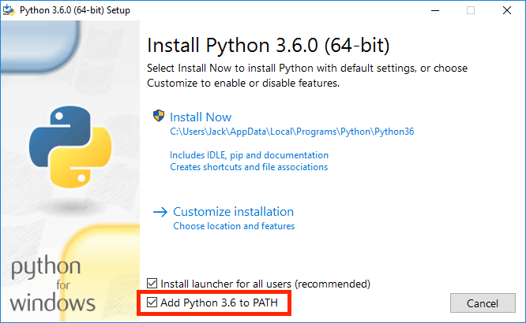
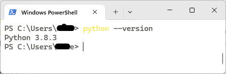

实验 0：环境搭建#
参考 CS 61A Fall 2020 - Lab 00: Getting Started
本次实验介绍如何使用你的计算机完成课程作业，也会介绍一些 Python 的基础知识。
实验文档较长，但是大多是一些安装操作以及一些使用说明。熟练使用这些工具，可以更好地帮助你完成课程内容。
初始文件#
下载文件 lab00.zip，该文件包含实验的初始代码以及用于测试的 Ok 工具。
任务一：安装 Python#
Python 3 是本课程主要使用的编程语言，根据下述步骤安装 Python 3 解释器。
注意
建议和课程保持一致，使用 Python 3.8 版本。
版本不一致可能会出现一些意想不到的报错，初学者不太容易解决。
对于 Windows 系统用户，可以下载 Python 3 (the Windows x86-64 executable installer)。双击安装包，根据提示进行安装即可。需要注意的是，安装过程中需要勾选“Add Python 3.x to PATH”选项，将 Python 添加到系统的 PATH 路径中：

对于 macOS 系统用户，可以下载 Python 3 (64-bit)。双击打开软件包，根据提示一步步安装就好。
任务二：使用终端#
安装完成后，可以使用系统自带的终端工具（macOS 的“终端”，Windows 的 PowerShell）检查 Python 是否安装正确。
打开终端，输入 python --version：

补充：环境变量
如果你的终端无法找到 python 命令，很可能是环境变量 PATH 没有设置正确。
在 PowerShell 中可以使用 $env:PATH 打印出系统已存在的路径信息；macOS 终端可以使用 echo $PAHT 命令进行打印。
至于环境变量 PATH 的概念以及如何设置，大家可以通过搜索引擎自行查找相关的教程。
如果一切安装就绪，我们就可以尝试练习使用终端，特别是一些文件管理相关的操作。
Python 解释器#
在终端输入 python，你将进入 Python 解释器：
PS C:\Users\cs100> python
Python 3.8.3 (tags/v3.8.3:6f8c832, May 13 2020, 22:37:02) [MSC v.1924 64 bit (AMD64)] on win32
Type "help", "copyright", "credits" or "license" for more information.
>>>
注意，某些系统可能需要你输入其他别名才可以进入，例如 python3，py 等。
你可以在 >>> 后面输入 Python 代码，尝试练习课程中介绍过的一些表达式。
退出解释器，可以输入 exit() 函数。也可以使用终端快捷键，例如 PowerShell 可以输入 Ctrl-Z；macOS 终端可以输入 Ctrl-D。
用户目录#
打开终端时，默认情况下，你应该处在用户目录，即环境变量 HOME 表示的路径。PowerShell 会直接显示当前的路径，例如 PS C:\Users\cs100。
macOS 终端会显示 ~ 符号，该符号通常可以替代 HOME 变量。在 macOS 终端可以输入 echo $HOME 显示用户目录的路径。